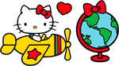

Sanrio® é uma marca life style global mais conhecida pela personagem Hello Kitty®, que foi criada em 1974 e detentora de muitas outras marcas de personagens amadas, como My Melody™, Kuromi™, LittleTwinStars™, Cinnamoroll™, Pompompurin™, gudetama™, Aggretsuko™, Chococat™, Badtz-Maru™ e Keroppi™. A Sanrio foi fundada com base na filosofia de que um pequeno presente pode trazer felicidade e amizade às pessoas de todas as idades. Desde 1960, esta filosofia tem servido de inspiração para oferecer produtos, serviços e atividades que promovam a comunicação e inspirem experiências únicas aos consumidores em todo o mundo. Hoje, os negócios da Sanrio se estendem à indústria do entretenimento com várias séries de conteúdos, games e parques temáticos.
